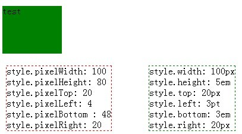
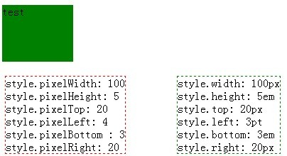
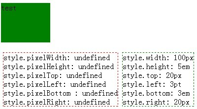

无
style 属性中以 pixel 字符开头的属性最初是 IE 浏览器私有的，他可能会导致如下兼容问题：
1. Firefox 不支持 style 属性中以 pixel 字符开头的属性；
2. Webkit 内核浏览器以 pixel 字符开头的属性返回值和 IE 中有差异。当值的单位是 "em" 时，Webkit 浏览器返回的值是没有经过 em 单位至 px 单位转换的数字。
使用 HTMLElement.style.pixel* 属性得到相应样式值会导致计算失误或脚本报错。
| Firefox Safari Chrome |
|---|
HTMLElement.style.pixel* 属性最初是微软公司为 IE 4.0 以上浏览器制定的特性，他们都是非标准的。
在 MSDN 中可以找到 pixelWidthpixelHeightpixelToppixelLeftpixelBottompixelRight 这几个特有属性的具体说明。
分析以下代码：
<script type="text/javascript"> window.onload = function() { var divObj =
document.getElementById('test'); document.getElementById('info').innerHTML = "style.pixelWidth:
" + divObj.style.pixelWidth + "<br/>style.pixelHeight: " + divObj.style.pixelHeight
+ "<br/> style.pixelTop: " + divObj.style.pixelTop + "<br/>style.pixelLeft:
" + divObj.style.pixelLeft + "<br/> style.pixelBottom : " +
divObj.style.pixelBottom + "<br/> style.pixelRight: " + divObj.style.pixelRight;
document.getElementById('info2').innerHTML = "style.width: " + divObj.style.width +
"<br/> style.height: " + divObj.style.height + "<br/> style.top: " +
divObj.style.top + "<br/> style.left: " + divObj.style.left + "<br/>
style.bottom: " + divObj.style.bottom + "<br/> style.right: " + divObj.style.right;
} </script> <div id="test" style="position:absolute; right:20px; bottom:3em;
left:3pt; top:20px; width:100px; height:5em; background-color:green;"> test </div> <div
id="info" style="position:absolute; top:120px; border:1px dashed
red;"></div> <div id="info2" style="position:absolute; top:120px;
left:250px; border:1px dashed green;"></div>
示例中 id 值为 test 的 DIV 标记是一个绝对定位元素，其尺寸是宽 '100px' 高 '5em' ，并设置了 'top' 'right' 'left' 'bottom' 四个样式。
示例中 id 值为 info 的 DIV 中输出的是 pixel* 些列的值，id 值为 info 的 DIV 中输出的是 DOM 规范中定义 widht height top right left bottom 六个属性值。
【注意】 id 值为 test 的 DIV 样式中各个值的单位不全是 px，height 和 bottom 的 单位是 em ，left 的 单位是 pt。
在各浏览器下的截图：
| IE6 IE7 IE8 Opera |
|---|
|  |
| Safari Chrome |
|  |
| Firefox |
|  |
从上面的截图中可以看出，Firefox 浏览器不支持这几个 pixel* 类型的值，所以返回的是 undefined。
Webkit 浏览器中的 pixelHeight 和 pixelBottom 的返回值和 IE 中不同，IE 中的值明显是经过了 em 尺寸单位至 px 尺寸单位的转换，而 Webkit
则是直接去掉了单位返回单位前的数字值，其结果显然是错误的。
避免使用 IE6 IE7 IE8 浏览器私有 DOM 属性值，改用标准 DOM 规范中定义的有度量单位的 "width "、"height"、"top"、 "right"、 "left"、 "bottom" 属性来代替它们。
| 操作系统版本: | Windows 7 Ultimate build 7600 |
|---|---|
| 浏览器版本: |
IE6
IE7 IE8 Firefox 3.6 Chrome 4.0.302.3 dev Safari 4.0.4 Opera 10.51 |
| 测试页面: | pixel_feature.html |
| 本文更新时间: | 2010-07-15 |
pixelWidth pixelHeight pixelTop pixelLeft pixelBottom pixelRight style position absolute width height top right left bottom